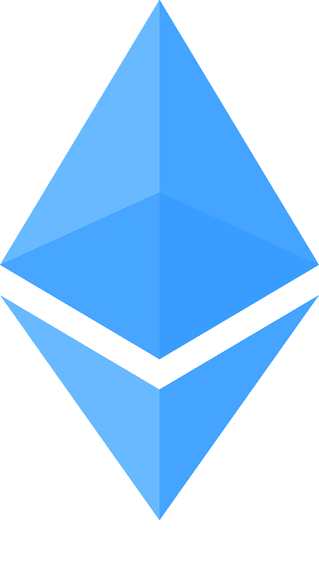

About
Welcome to the Holocron.Foundation. We aim to preserve important scientific and cultural works on the Ethereum Blockchain, all while contributing knowledge regarding storage and other related breakthroughs to the greater Ethereum ecosystem through our open source code. We will initially begin with US Public Domain Books in .txt format, but we aim to expand to other offerings as soon as any bugs or other issues are sorted out. Development will be very rapid, and new items will be added as quickly as possible.
The Holocron.Foundation initially began as an attempt to retain long term data on the Ethereum Blockchain, but as work progressed I realized the good that could be done using this technology. In essence, this project turns all Ethereum Nodes into an immutable and decentralized library and repository of knowledge. This means that unless the entirety of the Ethereum Network and every copy of the Ethereum Blockchain were destroyed, then every piece of uploaded knowledge will be available in perpetuity, unaltered, and uncensored.
Though the above would be enough of a reason to complete this project, there are also several additional benefits:
- This project provides inherent value to the Ethereum Blockchain. Anyone will be able to access the works uploaded for free, and, if running a node, even when internet connections are interrupted. This provides a reason for additional adoption and usage of Ethereum by the general population and provides additional value in running a node. I can envision a future in which every physical library runs at least a single node.
- This project will contribute storage methods, utilities, and examples to the Ethereum Blockchain.
- This project will provide an example of and the ability to integrate the Ethereum Blockchain into traditional website architecture setups. This site runs on a WAMP stack, but would be relatively easy to port to a LAMP stack, or other configuration.
 The Team
Right now, the team consists solely of myself, Samuel Troper. I intend to expand as rapidly as possible in order to embed as much useful information in the Blockchain as early as possible and to provide breakthrough contributions to the underlying technology and useful utilities to empower as many people as possible to begin using the revolutionary technology. Additionally, launching this application now enables us to take advantage of what I would consider to be low prices of ETH. As this technology becomes mainstream, prices will only continue to rise.
Even with a single person team, anyone can contribute! I aim to make as much of this project as possible open source. Ideally, pretty much everything except for private keys will be publicly available on Github.
Rather than undertake a bullshit ICO, we operate on splitting ETH donations using our smart contracts. This way, you know exactly how much of your ETH is heading directly to uploading knowledge! The default foundation split is at 30% to allow for rapid growth, while remaining competitive with traditional online stores. We also appreciate donations of Bitcoin, Litecoin, and USD.
If you want to get in touch with me, feel free to email me at samuel.troper@holocron.foundation!